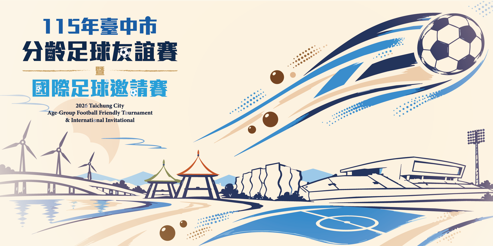

TAICHUNG · TAIWANTHE VENUE臺中國際足球
在 Google 地圖查看 ↗
臺中國際足球
運動休閒園區
本次活動配合園區落成開幕，安排五人制分齡賽事、11 人制國際女足交流與企業甲級足球聯賽。
活動日期2026/12/5–6、12/12–13
比賽場域五人制球場、11 人制球場
前往會場前
園區入口、停車與各組場地配置，請留意大會後續公告。地圖連結以園區名稱搜尋；詳細位置請依地圖及現場指引確認。
MATCH SPACES
球場與活動安排
內容依「1105 球隊公告版」競賽章程整理，實際安排與修正以大會最新公告為準。